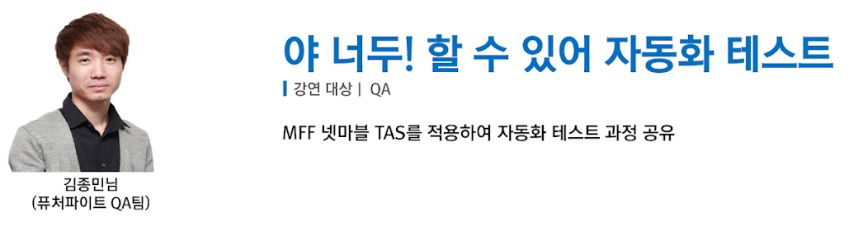
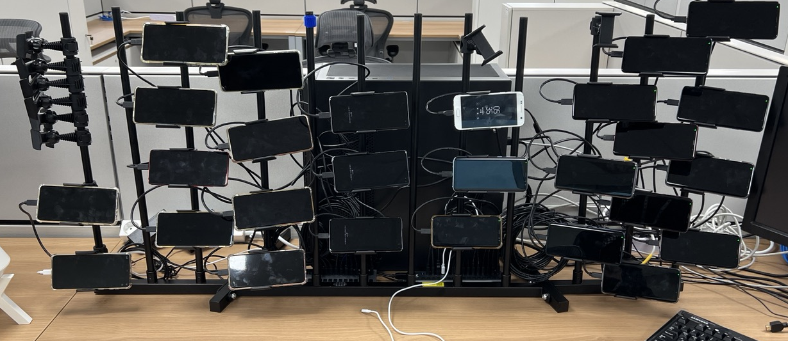
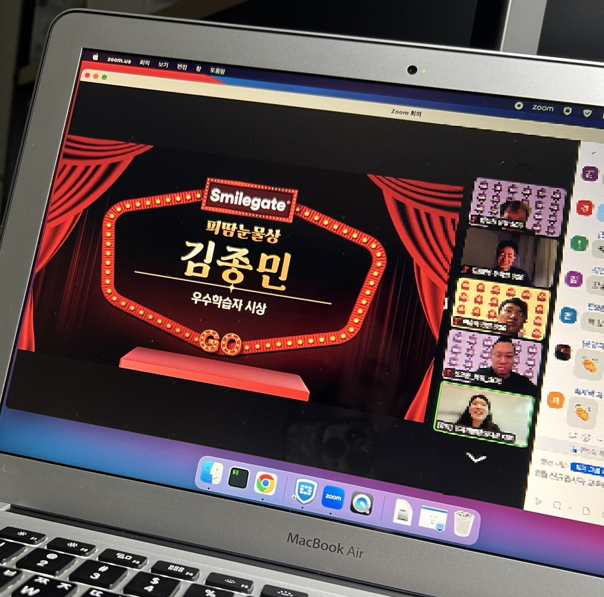

Education
동양공업전문대학
전공: 소프트웨어정보과
2008.03 - 2014.03 (졸업)
광명공업고등학교
전공: 전자전산과
2005 - 2008 (졸업)
병역
육군훈련소 - 교육 행정병
2009.02 - 2011.12 (육군 병장 제대)
Career
OmniCraft Labs
QA Engineer
2025.04 ~
테스트 품질 관리
- 테스트 품질 체계화 및 운영 정책 수립
- 요구사항 기반 테스트 전략 설계 및 커버리지 관리
AI Agent 기반 자동화 개발
- LLM 기반 게임 테스트 자동화 파이프라인 연구 및 개발
- 비전 모델 활용 UI/게임 화면 인식 자동 검증 시스템 구축
- 로컬 LLM 파인튜닝을 통한 도메인 특화 AI Agent 개발
- Generative AI를 활용한 업무 프로세스 자동화
크로스팀 협업
- 아트팀 에셋 검수 및 기획팀 콘텐츠 검증 서포트
- AI 이미지 생성 도구 활용 프로토타이핑 지원
스마일게이트엔터테인먼트
기술전략담당 - 품질검증팀
2023.07.17 - 2024.11.22
주요 성과
- 신규 2개 프로젝트 테스트 자동화 적용, 빌드 안정성 확보
- 차세대 테스트 자동화 시스템 기획 및 개발 주도
품질 관리
- 테스트 품질 체계화 및 운영 정책 수립
- 요구사항 기반 테스트 설계 및 커버리지 관리
- 이슈 트래킹 및 결함 관리 프로세스 운영
- 테스트 환경 및 디바이스 인프라 관리
자동화 R&D
- Airtest, Poco SDK, Python 기반 테스트 자동화 개발
- Unreal Engine 5 성능 QA 자동화 (FPS 모니터링)
- JIRA VBA 연동 업무 자동화 도구 개발
- SonicCloudOrg 기반 클라우드 테스트 자동화 시스템 설계
넷마블몬스터(前 씨드나인게임즈)
QA Engineer
2013.12.30 - 2023.07.11
주요 성과
- BVT 체크 항목 70% 자동화 달성, 테스트 시간 60% 단축
- 확률성 뽑기 n만 회 시뮬레이션 자동화 검증 시스템 도입
- 자동화 SDK 활용 사례 사내 발표
담당 업무
- 주요 프로젝트 초기 개발 단계부터 QA 투입 및 런칭 지원
- QA 계획 수립, 테스트 설계 및 커버리지 관리
- 이슈 트래킹 및 결함 관리 프로세스 운영
- 스토어 심사 대응 (Google, Apple, Kakao)
- 신입 QA 교육 및 온보딩 지원
참여한 프로젝트
레이븐2
마블 퓨처파이트
마블 퓨처 레볼루션
기타 프로젝트
Portfolio
Videos
AIRTEST+POCO 테스트 자동화
VBA 업무 Bug Fixed 자동화
VBA 업무 이슈 리포트 정리 자동화
배치 파일을 활용한 업무 자동화
간단한 툴 제작
Photos
사내 테스트 자동화 발표
테스트 자동화 디바이스 셋팅
오리엔테이션 1등
Skills
자격증
ITQ 아래 한글
ITQ 한글파워포인트
언어
일본어 (여행에서 간단히 사용, 드라마/애니메이션 자막 보지 않는 수준)
기술
C, Python, BASH, HTML, PHP, SQL(Mysql, MSSQL) - 기본 문법/프로그램 실행 흐름을 아는 수준, Chatgpt 활용
리눅스(CentOS, Ubuntu), 유닉스 (Freebsd) - 간단한 서비스 웹, 파일, 데이터베이스 구축/관리 수준
가상 윈도우(Vmware, Hyper-V, VirtualBox), Vmware Vsphere 구축/관리
도메인 네임 지식 (A 레코드, CNAME, 메일서버, 웹 포워딩)
BTS Tools 구축 및 관리 (Redmine, Jira)
오피스 365 (엑셀, VBA, 파워 포인트, 워드)
Adobe Photoshop, VEGAS - 간단한 사무 업무 사용 수준